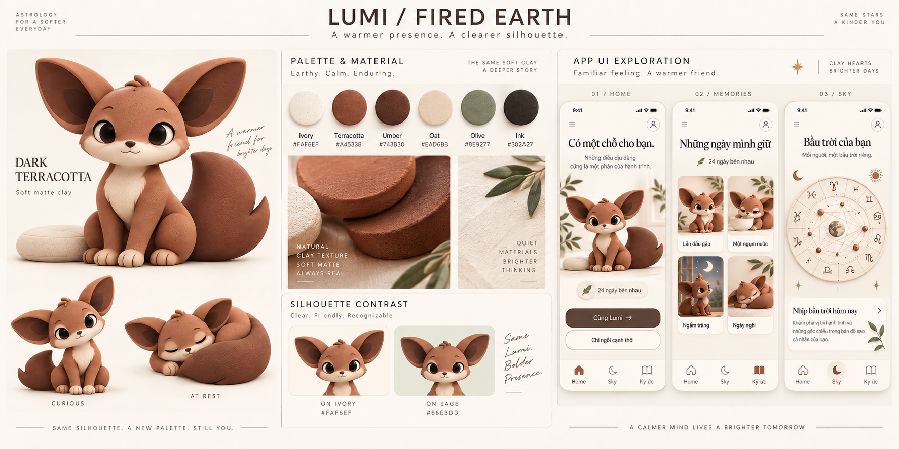
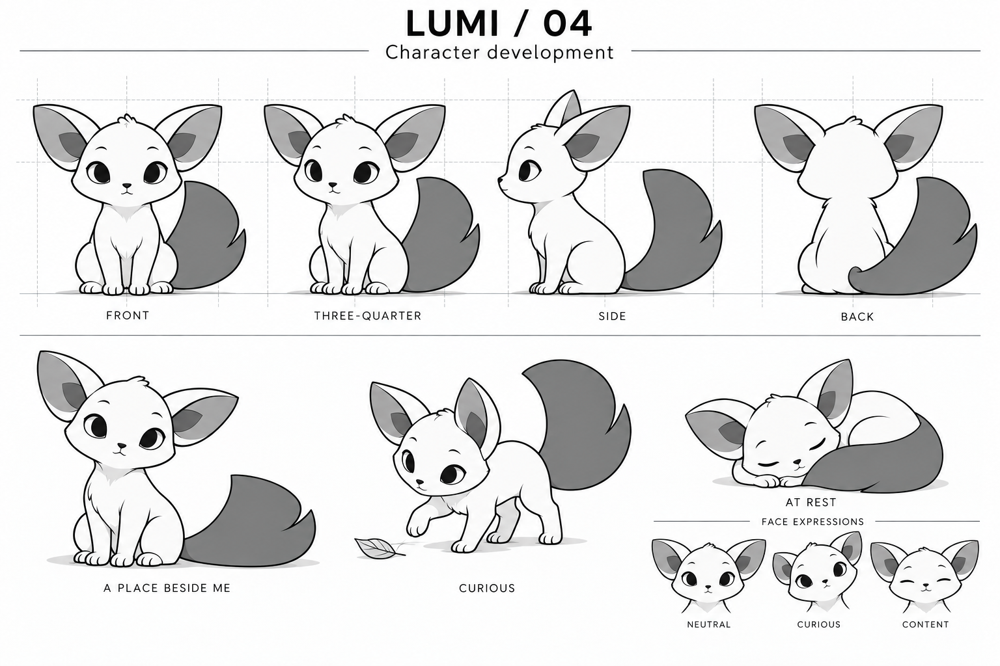
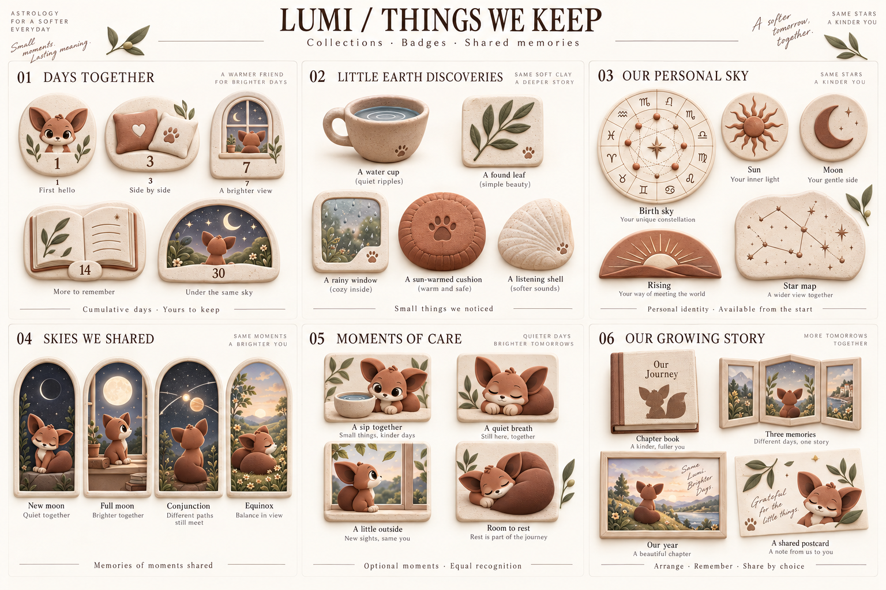

Muốn tốt lên nhưng không biết bắt đầu từ đâu
Biết mình cần chăm sóc bản thân nhưng phải tự chọn mục tiêu, tự nghĩ hoạt động và tự tìm động lực. Ngày ít năng lượng, ngay cả việc quyết định làm gì cũng trở thành rào cản.
App đồng hành cùng người dùng qua những hành động chăm sóc bản thân được cá nhân hóa từ bản đồ sao. Lumi — một sinh vật sống ở rìa các hành tinh — đến Trái Đất và cùng người dùng khám phá cách sống mỗi ngày.

Người dùng muốn chăm sóc bản thân tốt hơn nhưng khó biết nên làm gì, khó duy trì khi ít năng lượng và khó nhận ra những tiến bộ nhỏ.
Xem định vị & người dùng ↗ 02 / Cách giảiMột việc nhỏ, cùng LumiMỗi ngày, app gợi ý một hành động nhỏ dựa trên bản đồ sao cá nhân. Lumi cùng tham gia; người dùng có thể làm, nghỉ hoặc chỉ ghé xem.
Xem trải nghiệm ↗ 03 / Giá trị nhận đượcMột hành trình đáng tự hàoCó một người bạn đồng hành, cảm nhận những bước tiến của mình và tích lũy một collection riêng để nhìn lại với niềm tự hào.
Xem collection & thành tựu ↗Điều gì tạo động lực quay lại? Xem Gamification & hướng phát triển ↗
App đồng hành, thiết kế những hành động chăm sóc bản thân dựa trên bản đồ sao cá nhân hóa cho mỗi người dùng, cùng một PET lớn dần theo thành tựu và bộ sưu tập đồng hành.
Phụ nữ 25–40 tuổi tại Mỹ và châu Âu, quan tâm đến chiêm tinh và self-care. Họ muốn chăm sóc bản thân tốt hơn, từng bắt đầu nhiều thói quen nhưng khó duy trì khi năng lượng hoặc quyết tâm giảm.
Biết mình cần chăm sóc bản thân nhưng phải tự chọn mục tiêu, tự nghĩ hoạt động và tự tìm động lực. Ngày ít năng lượng, ngay cả việc quyết định làm gì cũng trở thành rào cản.
Nội dung có thể thú vị để đọc nhưng thiếu cảm giác dành riêng cho mình và một hành động cụ thể để làm ngay hôm nay.
Những kế hoạch lớn hoặc yêu cầu đều đặn dễ trở thành áp lực. Khi bỏ vài ngày, người dùng khó tìm được một điểm bắt đầu lại nhẹ nhàng.
Người dùng khó nhìn lại mình đã chăm sóc bản thân ra sao. Thiếu dấu mốc để cảm thấy tiến bộ, tự hào và muốn tiếp tục.
| Vấn đề | Cách sản phẩm giải quyết |
|---|---|
| Không biết bắt đầu từ đâu | Mỗi ngày đưa ra một việc nhỏ trong tối đa hai phút, với lựa chọn cùng làm, chỉ ghé xem hoặc nghỉ. Không yêu cầu người dùng tự thiết kế mục tiêu. |
| Thiếu cảm giác dành riêng cho mình | Dùng natal chart và transit để cá nhân hóa ngữ cảnh, nhóm nhu cầu của PET và gợi ý hành động từ thư viện. Người dùng quyết định việc nào phù hợp với mình lúc đó. |
| Khó duy trì và quay lại | PET tạo cảm giác có người cùng làm. Nhịp tham gia tự nguyện, vắng không mất tiến độ; quay lại là bắt đầu từ hôm nay, không có việc bù. |
| Không nhìn thấy những gì đã tích lũy | Lưu ngày bên nhau, hoạt động đã tự xác nhận, các chương và ký ức thành một collection riêng. Có thể xem lại, sắp xếp và chủ động chia sẻ. |
Trải nghiệm hướng tới cảm giác mình đang tốt lên qua những việc nhỏ, có điều để tự hào và có một hành trình riêng để nhìn lại.
Có những hành động nhỏ, cụ thể để thực hiện trong đời sống; dần nhận ra mình có thể dành một chút quan tâm cho bản thân ngay cả vào ngày khó.
Nhìn lại những việc đã chọn làm và các cột mốc đã đi qua. Niềm tự hào đến từ hành trình cá nhân, không cần so sánh với người khác.
Một PET mang dấu ấn bầu trời cá nhân, quen thuộc qua những lần ghé vào và những việc cùng làm. PET luôn an ổn và chào đón khi người dùng trở lại.
Bộ sưu tập gồm các chương tích lũy, ký ức tham gia sự kiện bầu trời và ảnh hoặc ghi chép tự chọn. Những gì đã lưu vẫn ở đó khi người dùng nghỉ.
Một cảnh bình yên, một gợi ý ≤ 2 phút và lựa chọn chỉ ghé xem hoặc nghỉ.
Horoscope ngày, tuần, tháng; ngày hẹn transit tiếp theo và hồi tưởng sự kiện đã qua.
Tổng ngày bên nhau, các chương tích lũy, ký ức và bố cục cá nhân có thể chia sẻ.
| Mức | Hành vi | Cách ghi nhận |
|---|---|---|
| Bậc 0 · Có mặt | Home hiển thị PET thành công; không timer hoặc thao tác bắt buộc. | Một ngày có mặt; không tự ghi hoàn thành bài tập. |
| Bậc 1 · Cùng làm | Chọn hoạt động ngắn và tự đánh dấu đã làm. | Ghi nhận hoạt động theo xác nhận của người dùng. |
| Bậc 2 · Giữ hiện vật | Tùy chọn lưu một ảnh hoặc đoạn viết. | Lưu ký ức cá nhân; cùng mức tiến triển với bậc 0–1. |
Nhập ngày, giờ, nơi sinh; cho phép tiếp tục khi thiếu giờ sinh. Gặp PET trước khi xin các quyền tùy chọn. Home đầu tiên tạo ngày bên nhau đầu tiên và ký ức “Lần đầu gặp”.
Mở thẳng Home hôm nay. PET vẫn an ổn, tổng ngày giữ nguyên. Không việc bù, thống kê bỏ lỡ hoặc hồi tưởng bắt buộc.
Engine chiêm tinh chọn một trong 13 nhóm nhu cầu và mức năng lượng của PET. Engine thư viện chọn hành động trong nhóm tương ứng; mỗi ngày ưu tiên nội dung ít lặp.
Thư viện gồm 13 nhu cầu × 3 bậc × 5–10 biến thể, tương ứng 195–390 mục. Khi nhiều transit cùng xuất hiện: ưu tiên ngày nghỉ → aspect quyết bậc → hành tinh quyết loại, nhà quyết bối cảnh → thiếu aspect thì dùng nhà → còn nhiều lựa chọn thì chọn nội dung lâu chưa xuất hiện.
Lumi là một sinh vật thuộc loài sống ở rìa các hành tinh, đang học cách sống trên Trái Đất cùng người dùng.
Thân gọn, bốn chân ngắn, mõm ngắn và mắt oval dịu. Hai tai lớn dạng cánh lá mở ngang; một chiếc đuôi bản rộng cong như chiếc quạt, có một khấc nhỏ ở viền. Tai và đuôi là hai dấu nhận diện xuyên suốt.
Chất liệu Clay mềm và lì. Thân đất nung đậm, tai trong và đuôi nâu đất, mõm và ngực kem sáng. Giữ một loài và tạo hình nhất quán; bản đồ sao cá nhân được thể hiện qua hồ sơ, ngữ cảnh và collection.
PET nhìn lên, dịch thân nhẹ và mở đuôi thành một cung thấp, chừa một chỗ bên cạnh. Chào một lần, không thúc giục lặp lại.

Mở bảng hình dáng ↗| Tình huống | Hành vi PET |
|---|---|
| Chờ / ghé vào | Thở nhẹ, chớp mắt; nhìn lên và chừa chỗ khi người dùng đến. |
| Có gợi ý | Nhìn cốc, ngáp hoặc quan sát một vật; đi cùng một hành động rõ và có thể bỏ qua. |
| Cùng thở / hoàn tất | Thân nở và hạ nhẹ; kết thúc bằng một phản hồi ngắn, có thể bỏ qua. |
| Nghỉ / bỏ qua | Tự nghỉ hoặc tiếp tục việc nhỏ; không buồn và không giảm gắn bó. |
| Quay lại / xem ký ức | Chào bình thường; nhìn lại hiện vật khi người dùng mở ký ức. |
Chuyển động nhỏ, không khóa thao tác. Chế độ giảm chuyển động dùng tư thế tĩnh hoặc chuyển mờ ngắn, giữ đủ thông tin trạng thái.
Clay mềm, tự nhiên và tiết chế. Lumi có hình khối và trọng lượng của một sinh vật đang sống cạnh người dùng.
Khối mềm, bóng tiếp xúc và ánh sáng dịu khiến Lumi có cảm giác ở trong cùng không gian. Cơ thể có độ nén khi nằm, tai và đuôi linh hoạt, chuyển trọng lượng tự nhiên.
Một chiếc cốc, tấm huy hiệu hoặc cảnh ngắm trăng trở thành vật lưu niệm đáng giữ. Collection kể những điều hai bên đã cùng trải qua.
Vòng hoàng đạo dạng phù điêu, pha trăng và đường quỹ đạo gợi astrology. Lumi giữ ngoại hình tự nhiên; không lõi năng lượng hoặc hiệu ứng phát sáng trên cơ thể.
Một tạo hình và hệ chất liệu dùng xuyên suốt nhân vật, cảnh và vật phẩm. Giao diện có bề mặt sạch, khoảng trống và chữ rõ; chi tiết Clay tập trung ở minh họa.
| Màu | Sử dụng | Ý nghĩa trong thiết kế |
|---|---|---|
Ivory#FAF6EF | Nền và card | Gợi giấy, vải và không gian trong nhà; tạo nền sáng để Lumi nổi bật. |
Terracotta#A4533B | Thân Lumi, điểm nhấn | Gợi đất nung và hơi ấm; màu nhận diện giúp nhân vật có sự hiện diện rõ. |
Umber#743B30 | Tai trong, đuôi, nút chính | Tạo chiều sâu và phân tách hình khối; dùng tiết chế quanh gương mặt. |
Oat#EAD6BB | Mõm, ngực, vật dụng | Giữ biểu cảm dễ đọc và liên kết Lumi với không gian mềm mại xung quanh. |
Olive#8E9277 | Lá cây, chi tiết nhỏ | Đưa dấu hiệu đời sống Trái Đất vào thế giới astrology. |
Ink#302A27 | Chữ và icon | Giữ giao diện rõ ràng, trưởng thành và dễ đọc. |
Đây là liên tưởng thiết kế trong ngữ cảnh Lumi. Cảm nhận màu còn phụ thuộc ánh sáng, chất liệu, màu bên cạnh và trải nghiệm cá nhân; không dùng màu để hứa hẹn tác động sức khỏe.
70% ivory/oat sáng cho nền và bề mặt; 15% terracotta tập trung ở Lumi; 10% umber/ink cho chữ, nút và chiều sâu; 5% olive cho chi tiết tự nhiên. Đây là tỷ lệ định hướng thị giác trên màn hình, có thể điều chỉnh theo nội dung.
| Màn | Cách thể hiện |
|---|---|
| Home | Một Lumi nổi bật trong góc sống gần gũi: cửa sổ, chiếc cốc, chỗ ngồi trống. Một hành động rõ và lựa chọn chỉ ngồi cạnh. |
| Memories | Thẻ sáng, hình minh họa Clay và phần chữ tách riêng. Cảnh, tư thế và vật lưu niệm thay đổi theo câu chuyện. |
| Sky | Bản đồ sao, vòng hoàng đạo, pha trăng và đường góc chiếu là tâm điểm. Lumi xuất hiện nhỏ; giữ vùng đọc sáng, biểu đồ triển khai từ dữ liệu chart. |
Trên nền ivory, ink đạt tương phản khoảng 13,12:1, umber 8,09:1 và terracotta 5,03:1. Olive đạt 2,99:1, chỉ dùng cho trang trí hoặc nền phụ, không làm chữ nhỏ trên ivory. Kiểm tra tương phản lại trên giao diện thực tế có texture.
Cơ sở tham khảo: Màu sắc trong ngữ cảnh · Elliot · Liên tưởng và sở thích màu · Palmer & Schloss · Tương phản chữ · W3C.
Collection lưu dấu hành trình giữa người dùng và Lumi: danh tính bầu trời riêng, những khám phá trên Trái Đất và các khoảnh khắc cùng nhau.

| Nhóm | Vật phẩm | Cách xuất hiện |
|---|---|---|
| 01 · Ngày bên nhau | 5 huy hiệu: Lần đầu gặp (1), Bên cạnh nhau (3), Một góc nhìn mới (7), Những điều để nhớ (14), Cùng một bầu trời (30). | Tự lưu tại mốc ngày có mặt tích lũy. Không cần liên tiếp; mọi bậc tham gia cùng tiến triển. |
| 02 · Khám phá Trái Đất | 5 vật lưu niệm: chiếc cốc, lá cây, cửa sổ mưa, đệm nắng, vỏ sò lắng nghe. | Gắn với chuyện Lumi khám phá đời sống. Nội dung chưa xem còn dành cho lần sau; mở lại không quay thưởng. |
| 03 · Bầu trời riêng | 5 vật phẩm danh tính: natal chart, Mặt Trời, Mặt Trăng, Cung Mọc, bản đồ chòm sao. | Có từ đầu theo dữ liệu sinh sẵn có; không phải phần thưởng. Thiếu giờ sinh vẫn tiếp tục, không hiển thị Cung Mọc như dữ liệu đã xác định. |
| 04 · Ký ức bầu trời | 4 cảnh: trăng mới, trăng tròn, giao hội, điểm phân. | Ký ức tham gia ghi khi có mặt trong sự kiện phù hợp. Bỏ lỡ vẫn đọc hồi tưởng; không tạo ký ức tham gia giả hoặc ô thất bại. |
| 05 · Khoảnh khắc chăm sóc | 4 thẻ: Một ngụm nước, Một nhịp thở, Một chút ngoài trời, Có chỗ để nghỉ. | Theo lựa chọn và xác nhận của người dùng. Thẻ ngang giá trị, không xếp hạng độ cố gắng hoặc coi mở app là hoàn thành hoạt động. |
| 06 · Câu chuyện cùng nhau | 4 hình thức lưu giữ: sách chương, bộ ba ký ức, tranh hành trình năm, postcard. | Sách chứa các chương; bộ ba và postcard dùng ký ức đã có. Tranh năm nhìn lại các ngày thực sự đồng hành, không yêu cầu đủ 365 ngày. |
Huy hiệu thể hiện ngày đồng hành và ký ức. Không chấm điểm sức khỏe, mức tình cảm của Lumi hoặc thứ hạng giữa người dùng.
Ngày tích lũy, chương và vật lưu niệm không mất khi vắng. Không hạn nhận quà, mua lại tiến độ, tiền ảo hoặc phân hạng độ hiếm.
Sắp tối đa ba ký ức, đổi màu khung, xem trước, lưu hoặc hủy. Không bắt viết, nộp ảnh, chia sẻ hoặc hoàn thành một bộ.
Vật phẩm mang cử chỉ, dấu chân hoặc silhouette tai–đuôi của Lumi. Thành tựu mở rộng câu chuyện và collection; không làm PET tiến hóa theo điểm.
Bộ đầu tiên: huy hiệu ngày tích lũy, danh tính astrology theo dữ liệu, ký ức hoạt động và sự kiện được hỗ trợ, vật khám phá từ thư viện chuyện, sách chương và sắp ba ký ức. Mở rộng: thêm biến thể vật phẩm, tranh năm và các mẫu postcard. 27 mẫu trên là danh mục hình ảnh của hệ thống, không phải 27 phần thưởng phải hoàn thành.
Tạo lý do muốn quay lại bằng một mối quan hệ riêng, một chuyện mới và một lịch sử đáng giữ.
━ Thiết kế v1 đang planning ┄ Hướng phát triển có điều kiện
Đang so sánh hai lớp; nhãn ghi điểm v1 → hướng phát triển.
Lumi, lịch sử riêng và collection bền vững tạo cơ sở sở hữu. Phần lớn ký ức lưu tự động; người dùng mới chỉnh bố cục nhỏ, chưa xây dựng sâu một thế giới riêng. 27 mẫu vật phẩm không đồng nghĩa với Ownership cao.
F09 · F15 · F17 · G02Chuyện nhỏ và lịch bầu trời tạo điều để khám phá. Nội dung được biên soạn hữu hạn, chưa có cấu trúc bất ngờ hoặc nhánh truyện sâu; độ phong phú cần được thử.
F05 · G03Việc nhỏ và mốc ngày làm tiến triển dễ thấy. Huy hiệu hiện diện không đại diện cho vượt thử thách hoặc phát triển kỹ năng; chưa có lộ trình làm chủ kỹ năng.
F11–13 · F15 · G01Câu chuyện Lumi đến từ bầu trời riêng tạo ý nghĩa cá nhân. Chưa có vai trò được trao rõ ràng hoặc mục đích vượt bản thân; không đồng nhất self-care với Epic Meaning.
F09 · G01Sắp tối đa ba ký ức, đổi màu khung và xem trước tạo lựa chọn sáng tạo nhỏ. Không gian thử nghiệm và phản hồi còn hẹp, chưa tạo vòng sáng tạo sâu.
G02Lumi tạo cảm giác đồng hành; v1 cho phép chia sẻ chủ động. Chưa có phản hồi xã hội trong app; không tính bạn bè hai chiều thuộc giai đoạn sau.
F09 · F20Sự kiện theo lịch và chương theo ngày tích lũy có yếu tố chờ. Không giới hạn nguồn cung, hạn nhận quà, khóa chăm sóc hoặc cơ chế mua quyền truy cập.
F05 · F17 · G01Không mất ngày, ký ức hoặc tình cảm khi vắng. Ký ức tham gia sự kiện vẫn có thể tạo chút cảm giác bỏ lỡ; hồi tưởng giúp giảm áp lực, không xóa hoàn toàn cảm nhận này.
F15 · F17 · F23Thang nội bộ: 0 = không có cơ chế; 1–3 = nhẹ hoặc hẹp; 4–6 = rõ nhưng chiều sâu còn giới hạn; 7–8 = nhiều cơ chế liên kết và người dùng chủ động phát triển; 9–10 = cơ chế sâu, xuyên suốt, khó thay thế. Không tính tổng điểm; mức cao không phải lúc nào cũng phù hợp.
Định hướng: lấy lịch sử riêng làm nền gắn bó, nội dung khám phá và việc nhỏ làm lý do quay lại. Giữ Scarcity/Avoidance thấp; chỉ nâng đánh giá khi hành vi thiết kế có thêm chiều sâu và được kiểm tra. Chia sẻ v1 khác với quan hệ bạn bè hai chiều ở giai đoạn sau.
Làm sâu lịch sử riêng và khả năng sáng tạo trước; tiếp đến là câu chuyện, tiến bộ cá nhân và kết nối tự nguyện.
P0 · Nền v1: xây và kiểm tra Home, ba bậc tham gia, tổng ngày, ký ức, chuyện nhỏ, chia sẻ chủ động và đo lường. P1: dấu ấn riêng & sáng tạo. P2: khám phá & tiến bộ. P3: kết nối hai chiều. Đây là thứ tự ưu tiên phát triển, chưa gắn ngày phát hành.
| Nhóm / ưu tiên | V1 → hướng phát triển | Cơ chế phát triển | Điều kiện kiểm chứng |
|---|---|---|---|
OwnershipP1 · Làm rõ dấu ấn cá nhân | 6 → 7/10 | Cho chọn ký ức đại diện, tổ chức bộ theo chủ đề và giữ một trang hành trình riêng; lựa chọn để lại dấu vết bền vững. | Người dùng nhận ra điều làm collection của mình khác biệt và chủ động xem lại, chăm chút nó. Thêm vật phẩm đơn thuần không đủ. |
EmpowermentP1 · Sáng tạo có chiều sâu | 3 → 5/10 | Mở rộng sắp ba ký ức thành các trang do người dùng chọn chủ đề, bố cục và thứ tự; xem trước và sửa tự do, không tiền ảo. | Người dùng tự quay lại chỉnh trang và lưu bố cục khác nhau, không cần nhiệm vụ hoặc thưởng để thúc đẩy. |
UnpredictabilityP2 · Khám phá có tiếp nối | 5 → 6/10 | Thư viện chuyện có các mạch nối tiếp và nhánh nhẹ theo lựa chọn; thêm khám phá Trái Đất và hồi tưởng bầu trời. | Người dùng nhớ chuyện đã gặp và muốn biết phần tiếp; giảm cảm nhận lặp nội dung mà không tăng số lần refresh. |
MeaningP2 · Lời gọi đồng hành | 4 → 5/10 | Lumi có các chương khám phá Trái Đất; lựa chọn của người dùng góp phần vào câu chuyện, không chỉ nhận nội dung theo ngày. | Người dùng kể được vai trò của mình trong hành trình; không cảm thấy phải chăm Lumi để nó an ổn. |
AccomplishmentP2 · Tiến bộ có ý nghĩa | 5 → 6/10 | Bổ sung nhìn lại những hoạt động tự xác nhận và điều đã thử; có hành trình việc nhỏ tự chọn, không tăng thưởng theo độ khó. | Người dùng diễn đạt được một tiến bộ cụ thể ngoài số ngày mở app; phân biệt rõ có mặt với hoàn thành hoạt động. |
Social InfluenceP3 · Kết nối tự nguyện | 3 → 5/10 | Sau chia sẻ chủ động, thử bạn bè đồng thuận, thăm trang ký ức được chọn công khai và gửi lời chào; có mute/block. | Có tương tác hai chiều tự nguyện; theo dõi áp lực so sánh và phản hồi không mong muốn trước khi mở rộng. |
ScarcityXuyên suốt · Không tăng khan hiếm | 2 → 2/10 | Chỉ giữ nhịp thời gian thật và mốc ngày; không thêm giới hạn kho đồ, hạn nhận quà, vật phẩm độc quyền có thời hạn. | Người dùng hiểu có thể quay lại sau và vẫn đọc được sự kiện; không bị thúc mở app đúng giờ. |
AvoidanceXuyên suốt · Giữ rất thấp | 1 → 1/10 | Giữ lịch sử khi vắng, quay lại không nợ; làm rõ khác biệt giữa hồi tưởng sự kiện và ký ức tham gia. | Cảm giác mắc nợ hoặc bỏ lỡ không tăng khi thêm chương, vật phẩm hay tính năng xã hội. |
Cổng quyết định: thiết kế prototype theo từng pha, quan sát hành vi và phỏng vấn trước; khi có sản phẩm, theo dõi dữ liệu sử dụng và áp lực cảm nhận. Chỉ đưa cơ chế mới vào phạm vi phát hành sau khi kiểm chứng; bảng điểm tương lai không thay thế bằng chứng.
| Cơ chế | Quyết định |
|---|---|
| Ngày bên nhau | Cộng tối đa một lần mỗi ngày theo múi giờ nhà đã chọn, khi Home hiển thị PET. Mở lại, đổi thiết bị hoặc hoàn thành nhiều việc không nhân tiến độ. |
| Chương tích lũy · G01 | Các mốc 1, 3, 7, 14, 30 ngày; sau đó mỗi 30 ngày. Tự lưu thẻ chương, không cần nhận đúng lúc và không cần ngày liên tiếp. |
| Ký ức · F17 | Mỗi ngày có mặt để lại một mục nhỏ. Ký ức tham gia transit chỉ ghi khi thực sự có mặt; người bỏ lỡ vẫn xem hồi tưởng sự kiện. |
| Sắp ký ức · G02 | Chọn tối đa ba ký ức, đổi thứ tự và chọn một trong ba màu khung. Có xem trước, lưu, hủy và thao tác thay thế kéo thả. |
| Chuyện nhỏ · G03 | Nội dung được biên soạn, không đổi ngẫu nhiên khi refresh. Chuyện chưa xem còn dành cho lần sau; phân biệt truyện hư cấu và hồi tưởng có ngày cụ thể. |
| Phản hồi & điểm dừng · G04 | Phản hồi liên quan đến hành động, ngắn và có thể bỏ qua. Không tự chạy nhiệm vụ tiếp theo, chuỗi quà hoặc hoạt động kế tiếp. |
Khung động lực: Octalysis · Yu-kai Chou ↗
| Mã | Tính năng | Hành vi |
|---|---|---|
F18 | Onboarding ngày · giờ · nơi sinh | Ba dữ kiện sinh ra cả chart lẫn sinh vật. Thiếu giờ sinh phải có đường đi tiếp, không phải ngõ cụt. |
F01 | Ephemeris service | Transit của ngày cho chart cá nhân: hành tinh natal bị chạm, nhà Mặt Trăng đang qua, loại aspect. Tính trước nhiều năm, không cần server đoán. |
F02 | Hiện hệ chiêm tinh + số đối chiếu được | Ghi rõ hệ đang dùng ngay trong UI, kèm cung và độ để người dùng cross-check ra cùng kết quả. Không giấu trong mô tả store. |
F03 | Hiệu chỉnh thông tin chart | Sửa giờ sinh và hiệu chỉnh rising sign trong phần cài đặt, kể cả sau onboarding; giữ PET và lịch sử đã có. |
F04 | Horoscope — ngày · tuần · tháng | Nội dung đọc sinh từ transit ở ba thang thời gian. Thang thời gian làm trục điều hướng, không phải danh sách tính năng. |
F05 | Ngày hẹn transit tiếp theo | Ngày cụ thể theo chart để chờ; có hồi tưởng khi sự kiện qua. Không countdown hết hạn quà, không ép mở app đúng lúc. |
| Mã | Tính năng | Hành vi |
|---|---|---|
F06 | Bộ chọn nhu cầu | Ánh xạ transit → 1 trong 13 nhóm nhu cầu + bậc năng lượng. Tồn tại nhưng không hiển thị dòng nào. |
F07 | Quy tắc gỡ xung đột | Năm bước khi một ngày có nhiều transit: ngày nghỉ thắng tất cả → aspect quyết bậc → hành tinh quyết loại, nhà quyết chỗ → không aspect thì dùng nhà → còn nhiều thì lấy cái lâu chưa xuất hiện nhất. |
F08 | Tách engine astro / engine thư viện | Engine chiêm tinh chọn loại nhu cầu; engine thư viện chọn hành động nào. Không hardcode hành động vào transit. |
F11 | Bậc 0 — có mặt là đủ | Home hiển thị PET ghi một ngày có mặt. Không yêu cầu timer, tick hoặc hiện vật; không đồng nhất với việc đã làm bài tập. Cùng mức tiến triển với bậc 1–2. |
F12 | Bậc 1 — tick | Người dùng làm cho sinh vật. App ghi nhận, không kiểm chứng được, và không cần kiểm chứng. |
F13 | Bậc 2 — hiện vật tùy chọn | Ảnh hoặc đoạn viết để lưu ký ức, không chứng minh được hành vi ngoài đời. Không bắt buộc và không được cộng tiến triển nhiều hơn bậc 0–1. |
F14 | Thư viện hoạt động | 13 nhóm nhu cầu × 3 bậc, mỗi ô 5–10 biến thể; tổng 195–390 mục nội dung. |
| Mã | Tính năng | Hành vi |
|---|---|---|
F09 | Danh tính PET | Lumi giữ tạo hình tai cánh lá và đuôi bản rộng, màu Fired Earth. Hồ sơ và collection mang dấu ấn natal chart; sửa thông tin sinh không tự thay PET. |
F10 | Ngôn ngữ đồng hành | Gợi ý chăm sóc nói về PET hoặc bầu trời. Nội dung thao tác rõ ràng; không gán tâm trạng hoặc sức khỏe cho người dùng. |
F15 | Tổng ngày bên nhau | Mỗi ngày có mặt cộng một lần; vắng giữ nguyên. Không current/longest streak, reset hoặc trả phí sửa chuỗi. |
F16 | Ngày nghỉ từ transit + tự chọn | Transit có thể gợi ý PET nghỉ và báo trước. Người dùng luôn có đường chọn nghỉ; có mặt thì cộng một ngày, vắng không cộng và không trừ. |
F17 | Ký ức những ngày đã cùng có mặt | Chỉ gắn ký ức tham gia transit khi có mặt trong sự kiện. Bỏ lỡ vẫn xem hồi tưởng lịch sử; không ô thất bại. Ký ức đã có không mất khi vắng. |
F19 | Nhắc nhở tự nguyện | Chỉ gửi khi được cho phép; có thể tắt. Nội dung chào nhẹ hoặc nhắc một việc nhỏ, không nhắc nợ hay trách vắng mặt. |
F20 | Chia sẻ & kết nối | v1 cho phép chủ động chia sẻ ký ức với bản xem trước và lựa chọn dữ liệu. Bạn bè đồng thuận, lời chào hai chiều, mute/block thuộc giai đoạn tiếp theo. |
F23 | Quay lại sau khoảng vắng | Mở Home hôm nay; PET an ổn. Không hiện số ngày bỏ lỡ, việc bù hoặc quà chờ hết hạn. |
| Mã | Tính năng | Phạm vi |
|---|---|---|
G01 | Chương tích lũy | Mốc ngày và thẻ chương tự lưu. |
G02 | Sắp ký ức | Tối đa ba ký ức, thứ tự và màu khung. |
G03 | Chuyện nhỏ của PET | Thư viện chuyện và trải nghiệm khám phá theo ngày. |
G04 | Phản hồi & điểm dừng | Phản hồi theo hành động; kết thúc rõ ràng. |
G05 | Đo lường trải nghiệm | Có mặt, hoạt động, quay lại và áp lực cảm nhận. |
Tiền ảo, kho đồ và trang trí thế giới; bảng xếp hạng, paid reroll và cơ chế mua lại tiến độ.
Luôn có lựa chọn chỉ xem, nghỉ hoặc bỏ qua. Không bắt viết, chụp ảnh hay khai báo tâm trạng.
Ngày tích lũy và ký ức không giảm, hết hạn hoặc mất chất lượng khi người dùng dừng ghé.
Không thanh đói, bệnh, tuổi thọ; PET không buồn vì vắng. Không guilt notification, urgency giả hoặc phần thưởng theo độ cố gắng.
Ký ức riêng tư mặc định. Xem trước trước khi chia sẻ; dữ liệu sinh và nội dung cá nhân không tự đưa vào ảnh chia sẻ. Xóa dữ liệu cần xác nhận rõ.
Giọng dịu, trực tiếp, không infantilize. PET là bạn đồng hành hư cấu; không đóng vai bác sĩ hoặc người chấm điểm.
Chữ dễ đọc, thao tác rõ, hỗ trợ giảm chuyển động. Không dùng màu làm tín hiệu duy nhất, không bắt kéo thả hoặc canh thời gian.
| Ngữ cảnh | Câu dùng trong sản phẩm |
|---|---|
| Ghé vào | “Nó vừa tìm được một chỗ yên.” |
| Nghỉ | “Hôm nay nó muốn nghỉ thêm một chút.” |
| Ghi nhận | “Một ngày nữa cùng nhau.” |
| Kết thúc | “Một khoảnh khắc cùng nhau.” |
Đánh giá khả năng bắt đầu dễ dàng, duy trì việc nhỏ và quay lại mà không cảm thấy mắc nợ.
| Nhóm | Chỉ số theo dõi |
|---|---|
| Bắt đầu | Tỷ lệ đến Home đầu tiên; tỷ lệ tự chọn hoàn thành hoạt động đầu tiên trong D0; các điểm bỏ dở onboarding. |
| Giữ nhịp | D7/D30 retention; số ngày có mặt; tỷ lệ quay lại sau khoảng vắng. Đọc riêng theo có mặt và hoạt động. |
| Tham gia | Tỷ lệ chọn nghỉ, hoàn thành hoặc bỏ qua; xem và sắp ký ức; sử dụng tuyến Sky. |
| Chất lượng trải nghiệm | Khảo sát tự nguyện về cảm giác được đồng hành và áp lực phải mở app; theo dõi tắt thông báo và rời phiên. |
{kind=link}
{kind=link}